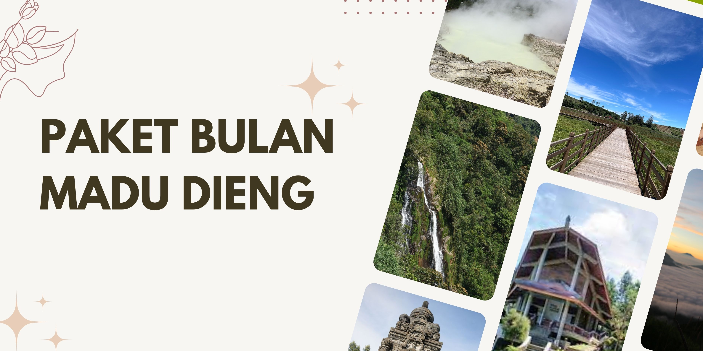

Paket Bulan Madu Dieng – Private Escape untuk Cerita Baru Berdua
Bulan madu di Dieng bukan sekadar liburan, tapi momen untuk menciptakan cerita baru yang akan selalu diingat. Suasana pegunungan yang sejuk, pagi berkabut, dan view sunrise di atas awan jadi latar sempurna untuk kamu dan pasangan memulai lembaran baru dengan nuansa yang tenang dan romantis. Semua perjalanan dirancang khusus, privat hanya untuk berdua, tanpa gangguan rombongan lain.
Dari penjemputan di kota pilihanmu, perjalanan ke Dieng sudah terasa istimewa—lewat jalanan berliku, pemandangan sawah, sampai kabut tipis di dataran tinggi. Begitu tiba di penginapan, kamar private dengan view pegunungan dan suasana homey siap menyambut. Candle light dinner bisa disiapkan khusus, begitu juga sarapan pagi di balkon, menikmati udara segar dan pemandangan langsung dari kamar.
Sepanjang trip, itinerary dibuat santai dan personal. Bisa bangun pagi untuk mengejar sunrise di Bukit Sikunir, jalan berdua di tepi telaga, relaksasi di air panas alami, atau sekadar quality time di cafe dan taman tersembunyi. Semua rute, jadwal, dan aktivitas bisa disesuaikan—tidak perlu terburu-buru, semuanya diprioritaskan untuk kenyamanan dan keintiman berdua.
Pemandu dan tim lokal hanya hadir saat dibutuhkan, menjaga privasi selama bulan madu tetap terjaga. Fotografer profesional bisa disiapkan jika ingin sesi foto couple tanpa harus canggung. Semua detail kecil, mulai dari welcome snack, bunga di kamar, sampai rekomendasi kuliner lokal terbaik sudah diatur agar setiap detik terasa spesial.
Pilihan Durasi & Konsep Honeymoon
- 1 Malam 2 Hari: Singkat tapi bermakna, cocok untuk yang ingin sekadar melarikan diri sejenak dari rutinitas.
- 2 Malam 3 Hari: Waktu lebih leluasa, bisa menjelajah lebih banyak destinasi romantis, itinerary lebih fleksibel.
- Custom Honeymoon: Bebas tentukan durasi, aktivitas, atau destinasi sesuai cerita dan gaya pasangan.
Fasilitas Paket Bulan Madu Dieng
- Transportasi privat (mobil, driver, BBM) penjemputan dari kota pilihan di Jawa Tengah & DIY
- Kamar honeymoon privat di penginapan view pegunungan (dekorasi bunga, special welcome set)
- Candle light dinner atau private dinner di lokasi spesial
- Sarapan dan makan siang/malam sesuai itinerary, bisa request menu favorit pasangan
- Tiket masuk semua destinasi wisata pilihan
- Pemandu lokal yang siap membantu tanpa mengganggu privasi
- Dokumentasi foto couple (opsional, by request)
- Air mineral harian
- Parkir, tol, dan retribusi wisata sudah termasuk
- Snack & bunga di kamar sebagai kejutan welcome
Rekomendasi Destinasi & Aktivitas Romantis
- Bukit Sikunir: Sunrise romantis di atas awan, momen spesial untuk berdua.
- Telaga Cebong: Jalan pagi mengelilingi telaga, udara segar dan sunyi.
- Kawah Sikidang: Eksplorasi kawah, pengalaman unik pegunungan bersama pasangan.
- Komplek Candi Arjuna: Berjalan di tengah candi kuno, suasana magis dan historis.
- Batu Ratapan Angin: Spot foto berdua dengan panorama telaga dan bukit di kejauhan.
- Taman Pintu Langit: Duduk santai di taman dengan view lembah, tempat quality time yang tenang.
- Pemandian Air Panas: Relaksasi di air hangat alami pegunungan, waktu healing berdua.
- Cafe hidden gem: Sore hari bersantai di cafe dengan view sawah atau perbukitan.
- Perkebunan Teh: Jalan santai di hamparan kebun teh, suasana hijau dan damai.
- Sentra Kuliner & Oleh-oleh: Wisata kuliner dan belanja buah tangan khas Dieng & Wonosobo.
Aktivitas dan destinasi bebas diatur, bisa request sesi prewedding casual, piknik privat, atau sekadar healing berdua di spot tersembunyi yang jarang dikunjungi wisatawan lain.
Panduan Bulan Madu di Dieng
Dieng selalu punya ruang untuk cerita baru, terutama untuk pasangan yang ingin suasana berbeda. Udara dingin dan kabut pagi jadi pengingat untuk saling menghangatkan. Disarankan membawa outfit hangat dan nyaman, kamera, serta mood positif. Semua kebutuhan teknis sudah diatur oleh tim, kamu tinggal menikmati momen spesial bersama pasangan tanpa harus memikirkan detail kecil.
FAQ Paket Honeymoon Dieng
Bisa request dekorasi atau konsep khusus di kamar?
Bisa, dekorasi kamar, snack, dan bunga bisa disesuaikan dengan permintaan khusus dari pasangan.
Privasi benar-benar terjaga?
Ya, semua perjalanan dibuat privat, pemandu hadir hanya saat dibutuhkan dan tidak mengganggu agenda pribadi.
Bisa pilih sendiri destinasi dan aktivitas?
Sangat bisa, itinerary fleksibel dan bisa custom sesuai minat pasangan.
Apakah tersedia sesi foto prewedding atau dokumentasi profesional?
Bisa request fotografer profesional untuk sesi foto couple, prewedding, atau dokumentasi momen selama trip.
Termasuk makan dan transportasi privat?
Ya, semua makan, transportasi, dan fasilitas utama sudah termasuk dalam paket honeymoon.